Drafts folder, art only. 63 frames, 32 x 48 px, one palette of 15 colours plus transparent. Player pink and computer lime are the same tiles with a palette swap. View at 100 percent zoom.
The verdict was that the animations cut in the middle of the body look choppy. The cause was not a tile seam. The old body was one map, and squash and stretch were made by doubling or deleting one row low in the body. Each GIF shows 4x: player on dusk, computer on storm, player on moon, computer on dusk.
| Animation | What was choppy | What changed |
|---|---|---|
| flap, both versions | Frames 1>2, 2>3, 4>5, 5>6 and 6>7: one row in the lower body was doubled or deleted, so everything above that row jumped 1 px while the belly and feet stood still (the cut through the body). Frames 4 to 6 also lifted the whole sprite 1 px; together that gave a 2 px drop of the head at 6>7. Frames 0>1 and 7>0 did not move at all. The wing jumped 60 degrees at 3>4. | Five hand-drawn body poses (squash, in-between, rest, in-between, stretch), one pose step on every frame, bottom edge fixed. No whole-sprite lift. Eight hand-drawn wing poses. Eyes, tufts and feet follow one or two frames late. |
| first pop and last pop | Frames 0>1, 2>3, 3>4, 4>5, 5>6: the same row trick; frames 6 onward frozen. | Flinch, recoil and settle through the hand poses; the wing and eyelids move on the frames between. |
| respawn blow-up | Frames 1>2, 3>4, 8>9, 9>10, 11>12: the puff toggled one row on and off; the frames between were frozen. | Blow (wide pose) and breathe in (tall pose) through the hand poses, one step per frame. |
| fall | Frames 2>3, 4>5, 7>8, 9>0: tuft and feet switched between two states; the frames between were frozen. | Body holds the long pose. A wave runs up each tuft, the wing flutters, the feet kick in turn; something moves on every frame. |
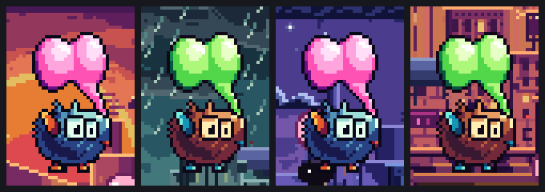
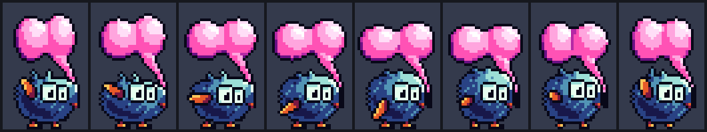
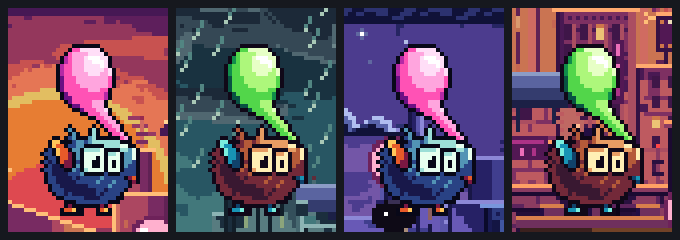
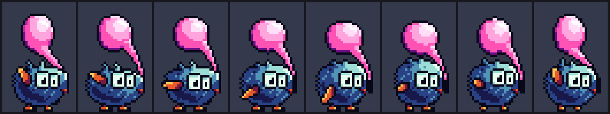
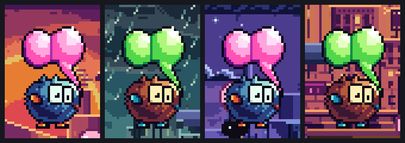
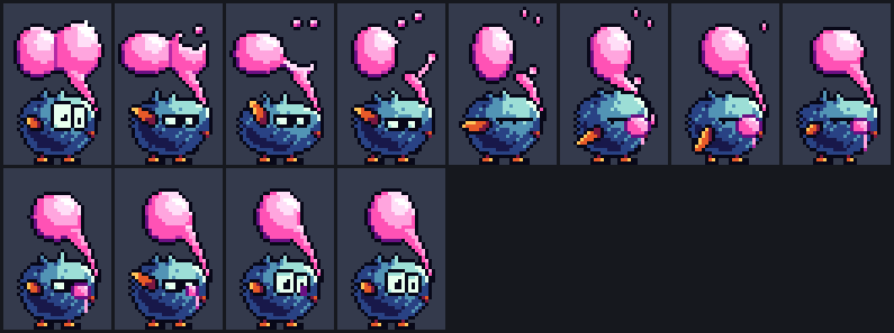
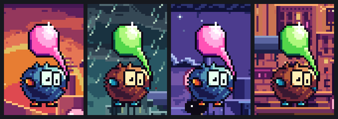
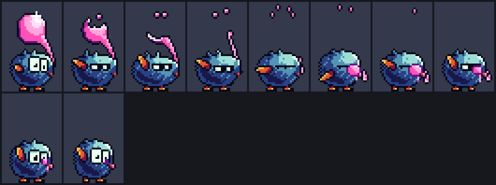
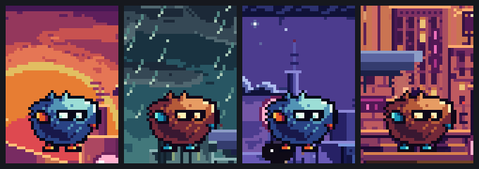
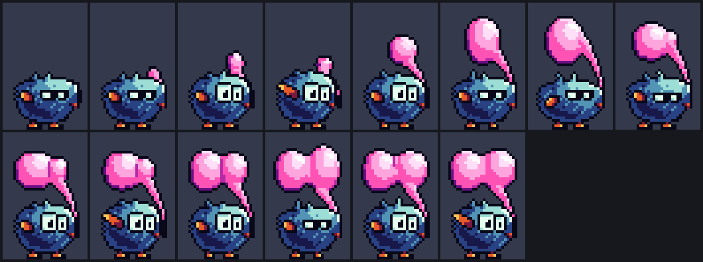
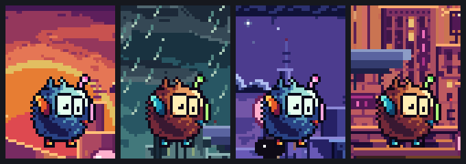
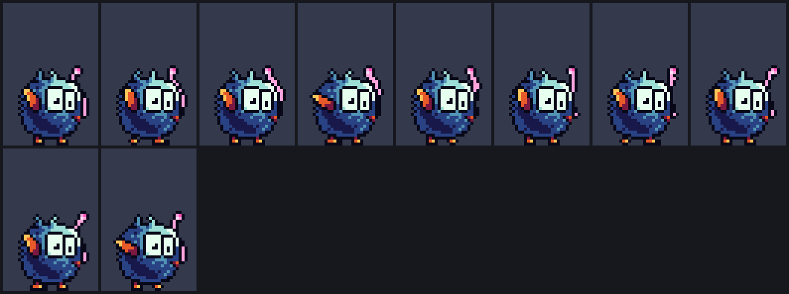
Grid order of sootling_final_sheet_1x.png: 8 columns, row-major. Slot 63 is empty. Frame counts per animation are unchanged.
| Animation | First frame | Frames | Ticks per frame (60 Hz) | Loop |
|---|---|---|---|---|
| flap2 (flap, two lobes) | 0 | 8 | 4 4 4 4 4 4 4 4 | yes |
| flap1 (flap, one lobe) | 8 | 8 | 4 4 4 4 4 4 4 4 | yes |
| pop2 (first pop, pull-round into one bubble) | 16 | 12 | 3 3 3 4 4 5 5 5 5 6 6 6 | no |
| pop1 (last pop) | 28 | 10 | 3 3 3 4 4 5 5 5 6 6 | no |
| inflate (respawn blow-up) | 38 | 14 | 5 5 5 5 5 5 5 5 5 5 5 5 5 5 | no |
| fall (fall) | 52 | 10 | 4 4 4 4 4 4 4 4 4 4 | yes |
| idle (no gum, standing (single frame)) | 62 | 1 | 60 | yes |
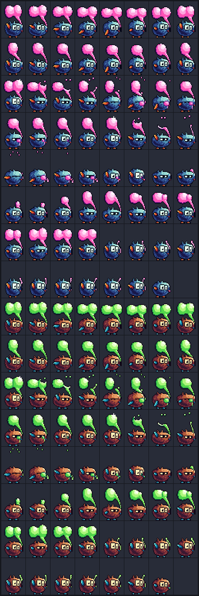
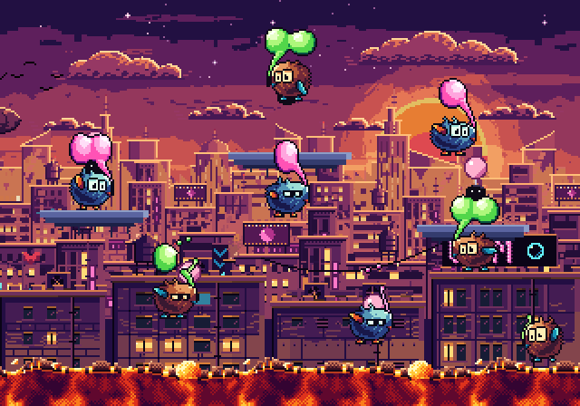
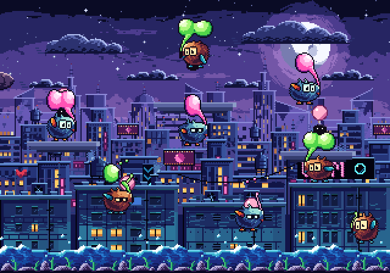
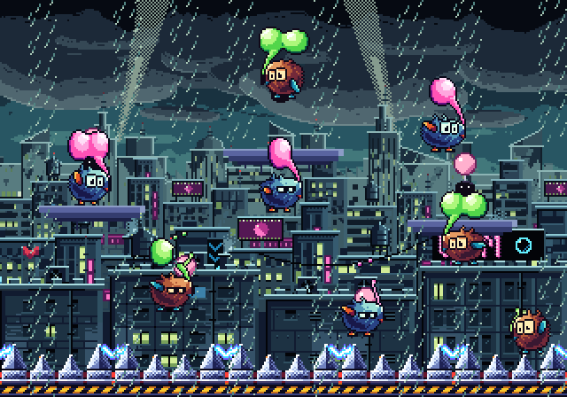
Sootling final, 32 x 48: numbers (script output)
frames: 63 = flap2 8, flap1 8, pop2 12, pop1 10, inflate 14, fall 10, idle 1; sheet grid 8 columns x 8 rows, row-major, slot 63 empty
frame box 32 x 48, feet row 47, hit box columns 14..17
palette index order 1..15: o 1 2 3 4 r e f g A B C D E w (0 = transparent, magenta 255,0,255 in the sheet)
palette player RGB: 1=(8,8,24) 2=(24,24,74) 3=(41,66,132) 4=(82,148,181) 5=(156,222,214) 6=(231,255,239) 7=(123,24,66) 8=(231,90,41) 9=(255,198,90) 10=(107,16,132) 11=(181,41,165) 12=(255,82,181) 13=(255,165,222) 14=(255,222,247) 15=(255,255,255)
palette player luminance: o=10 1=30 2=66 3=132 4=201 r=246 e=58 f=127 g=203 A=56 B=97 C=145 D=198 E=235 w=255
palette cpu RGB: 1=(16,8,24) 2=(57,24,49) 3=(115,41,57) 4=(181,90,57) 5=(231,156,99) 6=(255,239,181) 7=(16,66,107) 8=(24,148,181) 9=(123,239,222) 10=(8,82,66) 11=(16,140,74) 12=(82,214,74) 13=(173,247,123) 14=(231,255,198) 15=(255,255,255)
palette cpu luminance: o=12 1=37 2=65 3=113 4=172 r=237 e=56 f=115 g=202 A=58 B=95 C=159 D=211 E=241 w=255
palette swap player (pink gum) -> computer (lime gum): same tiles; indices that change colour: 1 2 3 4 5 6 7 8 9 10 11 12 13 14; keyline 1, soot fur 2..5, rim and eye white 6, ember 7..9, gum 10..14 (10 = deep line), 15 white unchanged
colours used: 15 of 15 (unused: none)
16 x 16 tiles over the 63 frames: 341 non-empty of 378, 294 unique without flips, 294 unique with flips
checker pixels on gum (colours 10..15): 0
checker pixels on fur and eyes: 154; pairs (count, smaller luminance step of the two palettes): 1/2 54 step 28, 2/3 49 step 48, 2/o 30 step 52, 3/4 5 step 58, 3/o 2 step 101, 4/o 2 step 159, o/r 12 step 224
fur ramp neighbour steps (fur ticks and dither use these pairs), smaller of the two palettes: 1/2 28, 2/3 48, 3/4 58 (rule: at least 28)
droplets cut by the frame box: 0; frames where the membrane touches columns 0, 31 or row 0: 0
body size: fur ball 24 x 19 px (columns 4..27, rows 27..45), with feet 24 x 21 (rows to 47); draft was about 20 x 17
art extent over all frames: top row 1, columns 1..30 (box is rows 0..47, columns 0..31)
silhouette edge pixels by colour: o 99.2%, e 0.6%, D 0.1%, w 0.1%, B 0.1%, A 0.0%
inner line (pixels right inside the keyline) by colour: 2 27.5%, C 14.7%, E 10.4%, A 9.8%, D 8.5%, 4 5.9%, B 5.3%, f 4.9%, 3 4.2%, g 3.5%, r 2.8%, e 2.4%, w 0.1%
player: darkest inner-line colour A luminance 56; keyline luminance 10
cpu: darkest inner-line colour e luminance 56; keyline luminance 12
mood dusk: sky luminance p5 / median / p95 = 25 / 87 / 181 (darkest 0)
player outline luminance step: keyline against median 77, against p5 15, against darkest 9; darkest inner line against p5 31, against darkest 56; measured edge pixel against backdrop pixel: flap2 mean 85 p10 30 under24 6%; flap1 mean 85 p10 30 under24 6%; fall mean 85 p10 25 under24 8%
cpu outline luminance step: keyline against median 74, against p5 13, against darkest 12; darkest inner line against p5 30, against darkest 55; measured edge pixel against backdrop pixel: flap2 mean 83 p10 27 under24 8%; flap1 mean 83 p10 27 under24 9%; fall mean 83 p10 22 under24 10%
mood moon: sky luminance p5 / median / p95 = 21 / 72 / 156 (darkest 4)
player outline luminance step: keyline against median 62, against p5 11, against darkest 5; darkest inner line against p5 34, against darkest 52; measured edge pixel against backdrop pixel: flap2 mean 68 p10 16 under24 16%; flap1 mean 68 p10 16 under24 16%; fall mean 68 p10 15 under24 17%
cpu outline luminance step: keyline against median 59, against p5 9, against darkest 7; darkest inner line against p5 33, against darkest 51; measured edge pixel against backdrop pixel: flap2 mean 66 p10 13 under24 17%; flap1 mean 66 p10 13 under24 17%; fall mean 66 p10 13 under24 18%
mood storm: sky luminance p5 / median / p95 = 14 / 67 / 168 (darkest 4)
player outline luminance step: keyline against median 57, against p5 4, against darkest 5; darkest inner line against p5 42, against darkest 52; measured edge pixel against backdrop pixel: flap2 mean 68 p10 18 under24 14%; flap1 mean 68 p10 18 under24 14%; fall mean 68 p10 16 under24 16%
cpu outline luminance step: keyline against median 55, against p5 1, against darkest 8; darkest inner line against p5 41, against darkest 51; measured edge pixel against backdrop pixel: flap2 mean 65 p10 16 under24 15%; flap1 mean 66 p10 16 under24 15%; fall mean 66 p10 14 under24 17%
motion of the body layer (fur, eyes, wing, feet; gum excluded), silhouette pixels changed per frame pair:
flap2 before: largest 90 at 6>7, recolour max 300, whole-body displacement over 1 px: 6>7 by 2 px
after: largest 58 at 0>1, smallest 40, recolour max 237, whole-body displacement over 1 px: none
before pairs: 0>1 1, 1>2 32, 2>3 31, 3>4 40, 4>5 35, 5>6 33, 6>7 90, 7>0 2
after pairs: 0>1 58, 1>2 49, 2>3 48, 3>4 46, 4>5 41, 5>6 40, 6>7 46, 7>0 48
flap1 before: largest 90 at 6>7, recolour max 300, whole-body displacement over 1 px: 6>7 by 2 px
after: largest 58 at 0>1, smallest 40, recolour max 237, whole-body displacement over 1 px: none
before pairs: 0>1 1, 1>2 32, 2>3 31, 3>4 40, 4>5 35, 5>6 33, 6>7 90, 7>0 2
after pairs: 0>1 58, 1>2 49, 2>3 48, 3>4 46, 4>5 41, 5>6 40, 6>7 46, 7>0 48
pop2 before: largest 56 at 4>5, recolour max 266, whole-body displacement over 1 px: none
after: largest 51 at 2>3, smallest 0, recolour max 224, whole-body displacement over 1 px: none
before pairs: 0>1 30, 1>2 0, 2>3 33, 3>4 30, 4>5 56, 5>6 34, 6>7 2, 7>8 3, 8>9 3, 9>10 2, 10>11 1
after pairs: 0>1 36, 1>2 47, 2>3 51, 3>4 46, 4>5 46, 5>6 45, 6>7 49, 7>8 45, 8>9 11, 9>10 6, 10>11 0
pop1 before: largest 60 at 4>5, recolour max 270, whole-body displacement over 1 px: none
after: largest 51 at 2>3, smallest 18, recolour max 224, whole-body displacement over 1 px: none
before pairs: 0>1 30, 1>2 0, 2>3 33, 3>4 30, 4>5 60, 5>6 36, 6>7 2, 7>8 2, 8>9 2
after pairs: 0>1 36, 1>2 47, 2>3 51, 3>4 46, 4>5 44, 5>6 44, 6>7 18, 7>8 39, 8>9 36
inflate before: largest 34 at 1>2, recolour max 191, whole-body displacement over 1 px: none
after: largest 52 at 5>6, smallest 0, recolour max 212, whole-body displacement over 1 px: none
before pairs: 0>1 1, 1>2 34, 2>3 0, 3>4 33, 4>5 1, 5>6 0, 6>7 0, 7>8 1, 8>9 33, 9>10 34, 10>11 0, 11>12 34, 12>13 1
after pairs: 0>1 0, 1>2 35, 2>3 38, 3>4 42, 4>5 44, 5>6 52, 6>7 48, 7>8 43, 8>9 43, 9>10 42, 10>11 44, 11>12 45, 12>13 11
fall before: largest 24 at 2>3, recolour max 64, whole-body displacement over 1 px: none
after: largest 22 at 3>4, smallest 5, recolour max 61, whole-body displacement over 1 px: none
before pairs: 0>1 2, 1>2 0, 2>3 24, 3>4 0, 4>5 24, 5>6 2, 6>7 0, 7>8 24, 8>9 0, 9>0 24
after pairs: 0>1 15, 1>2 15, 2>3 9, 3>4 22, 4>5 5, 5>6 15, 6>7 15, 7>8 6, 8>9 22, 9>0 8
body poses (area in pixels): S 26 x 17 = 361, S1 25 x 18 = 368, R 24 x 19 = 374, T1 23 x 20 = 382, T 22 x 21 = 385